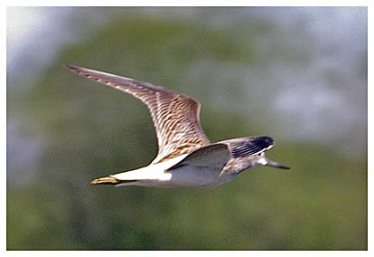

Greenshank
A regular passage visitor to the reservoir.

20/08/64 - Single bird. (DEP).
02/09/65 - Single bird.
07/10/65 - Single bird. (DEP).
1971 - Single bird. No date given in report.
23/08/86 - 2 birds. Seen also on 24/08. (HCS).
06/09/98 - Single bird, feeding along shoreline. Present until 08/09. (DWH).
06/09/00 - Single bird stayed 3 days (DWH)
23/09/00 - Single bird.
25/09/01 - Single bird (KGH)
20/09/02 - Single bird (KGH)
21/10/02 - Single bird.
24/08/03 - Single bird.
08/04/05 - Single bird.
09/08/05 - Single bird.
18/08/05 - Single bird.
24/08/05 - Single bird stayed 2 days (DWH)
04/08/06 - 2 birds (DWH)
09/08/07 - Single bird (KGH)
06/08/10 - Single bird (DWH)
07/09/10 - 2 birds (DWH)
21/08/11 - Single bird (RH)
17/09/11 - Single bird (DWH)
18/09/11 - 2 birds (DWH)
2012 - singles on 5 dates in August plus 2 birds on 16/08
2013 - singles on 7 dates in August plus 2 birds on 10/08
2015 - single bird on 17/07 (DWH)
2016 - 1 on 14/08 and another on 17/08. Then a very long staying individual from 26/08 until 10/09 (15 days)
2017 - no reports
2018 - no reports
2019 - single bird on 05/09 (KGH)
2020 - single bird on 20/09 (KGH)
2021 - single bird on 21/08. 3 birds on 23/08 (SH). Possibly the same 3 birds on 25/08 (DWH). Single bird on 26/08 and 27/08. Call heard on 06/09. 2 birds seen on 16/09 (KGH)
2022 - 3 short stay birds on 07/08. Singles on 13/08 and 15/08. 2 birds on 05/09
2023 - single bird on 09/08 (DWH)
2024 - single bird on 09/07 (DWH) (2 Black-tailed Godwits on the same day)
2025 - singles on 01/07, 06/07, 26/07 and 03/08